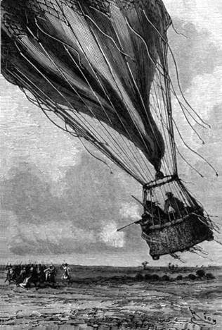
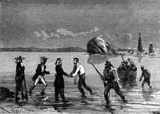

Talibasové. – Pronásledování. – Zpustošený kraj. – Mírný vítr. – Viktorie klesá. – Poslední zásoby. – Poskoky Viktorie. – Obrana výstřely. – Vítr se sesiluje. – Řeka Senegal. – Vodopády Guinské. – Horký vzduch. – Přelet přes řeku.
„Kdybychom byli opominuli opatrnosti a nebyli se zbavili včera zbytečné tíže,“ pravil doktor, „bylo by po nás dojista veta bývalo.“
„Z toho je vidět, jak dobře jest udělat vše v čas,“ odvětil Joe; „člověk vyvázne, a nic není přirozenějšího.“
„Ještě není po nebezpečí,“ namítl Fergusson.
„Čeho pak se obáváš?“ optal se Dick. „Viktorie nemůže se snésti bez tvé vůle, a kdyby se snesla?“
„Kdyby se snesla! Dicku, pohleď!“
Cestovatelé měli právě kraj lesa za sebou i spatřili asi třicet jezdcův, oděných širokými spodky a vlajícími burnusy; – někteří z nich byli ozbrojeni kopími, jiní dlouhými puškami; jeli volným cvalem na bystrých, ohnivých koních směrem Viktorie, jež plula s mírnou rychlostí.
Když uzřeli cestovatele, dali se do divokého křiku, máchajíce zbraněmi; zloba a hrozba zračila se jim na černohnědých tvářích, jimž dodávaly řídké, ale ježaté vousy výrazu tím ukrutnějšího; ujížděli bez námahy po nížících se návrších a nenáhlých úbočích, jež se svážejí k Senegalu.
„To jsou oni!“ vece doktor, „krvelační Talibasové, sveřepí marabutové Al-Hadžiovi! Raději bych se octl v širém lese v kruhu dravých zvířat, nežli v rukou těch zbojníků.“
„Nevypadají příjemně!“ podotekl Kennedy, – „a jsou silní chlapi!“
„Na štěstí ty šelmy nelítají,“ dodal Joe, „a to je také něco.“
„Vizte,“ ukazoval Fergusson, „ty rozbořené vsi, ty spálené chyše! toť jejich dílo; a kde se vztahovaly žírné nivy, tam zplodili oni suchopár a pustotu.“
„Hlavní věcí jest, že na nás nemohou,“ těšil se Kennedy, „a podaří-li se nám dostati řeku mezi ně a sebe, budeme v bezpečí.“

A vzav na mušku jednoho z nejpřednějších jezdců, vypálil.
„Pravdu díš, Dicku; ale nesmíme spadnout,“ odpověděl doktor, utkvěv pohledem na tlakoměru.
„Buď jak buď, Joe,“ řekl Kennedy; „nepotážeme se se špatnou, přichystáme-li si zbraně.“
„Na škodu to nebude, pane Dicku; můžeme býti povděčni, že jsme je cestou neutrousili.“
„Má karabina!“ zvolal lovec. „Doufám, že se s ní nikdy nerozloučím.“
A Kennedy nabil ji co nejpečlivěji; zbývalo mu dostatek prachu a kulí.
„V jaké výšce tíhneme?“ otázal se Fergussona.
„Asi sedmi set padesáti stop; ale nejsme již s to, abychom hledali příznivé proudy, vystupujíce nebo sestupujíce; – závisíme zcela na balonu.“
„To je mrzuté,“ odtušil Kennedy; „vítr nevěje příliš silně a kdybychom byli uhodili na vichr, jaký nás stihl za minulých dní, byli by nám ti zákeřníci již dávno sešli s očí.“
„Ti lotři jedou za námi volným cvalem, jako by si hráli; je to jako projížďka pro zábavu,“ podotekl Joe.
„Kdybychom byli na dostřel,“ pravil lovec, „ukrátil bych si chvíli tím, že bych je smetl s koní jednoho po druhém.“
„Ouha!“ odpověděl Fergusson; „vždyť by byli oni rovněž na dostřel, a naše Viktorie byla by snadným terčem kulkám z jich dlouhých pušek; kdyby pak ji rozstříleli, suď sám, v jakém bychom byli postavení.“
Talibasové neustali stíhati vzducholoď po celé ráno. Do jedenácti hodin dopoledne urazili cestovatelé sotva dvacetpět kilometrů na západ.
Doktor pozoroval bedlivě všeliký mráček na obzoru. Obávalť se neustále změny v ovzduší. Kdyby byl zahnán zpět k Nigeru, kam by se poděl? Mimo to znamenal, že balon patrně klesá; od ranního odjezdu snesl se už níže o více nežli tři sta stop, a Senegal byl dosud vzdálen zajisté na dvacet kilometrů; při nynější rychlosti bylo ještě počítati na cestu aspoň tři hodiny.
V tom obrátil k sobě jeho zřetel nový křik; Talibasové spěchali, pobádajíce koně.
Doktor pohleděv na tlakoměr, pochopil příčinu toho ryku.
„Což sestupujeme?“ zeptal se Kennedy.
„Ano,“ přisvědčil Fergusson.
„U všech všudy!“ zaklel v duchu Joe.
Než uběhlo čtvrt hodiny, byla loďka sotva sto padesát stop nad zemí, ale vítr vál prudčeji.
Talibasové rozehnali koně, a za nedlouho rozlehl se vzduchem hromadný výstřel z pušek.
„Jste příliš daleko, hlupci!“ zvolal Joe; „uznávám za dobré odkázat ty padouchy do slušné vzdálenosti.“
A vzav na mušku jednoho z nejpřednějších jezdců, vypálil; Talibas svalil se na zemi; jeho soudruzi stanuli, a Viktorie jim nadskočila.
„Jsou opatrni,“ prohodil Kennedy.
„Poněvadž mají za jisto, že nás dostanou do své moci,“ odtušil doktor; „dostanou nás, sneseme-li se ještě níže! Musíme vystoupit stůj co stůj!“
„Co vyhodíme?“ otázal se Joe.
„Všecky zbývající zásoby pemmikanu! Ubude nám tím přec asi třicet liber!“
„Už se stalo pane!“ pravil Joe vykonav rozkaz pánův.
Loďka, která se již takměř dotýkala půdy, vyhoupla se za hlučného křiku Talibasův; ale za půl hodiny po té spouštěla se Viktorie zase kvapem k zemi; ucházelť plyn průduchy obalu.
Netrvalo dlouho a loďka vznášela se nad samou zemí; černoši Al-Hadžiovi rozjeli se za ní úprkem; ale jak se děje v podobných případech, sotva Viktorie zavadila o půdu, odmrštila se skokem a spustila se poznovu o kilometr dále.
„Což pak neunikneme?“ katil se Kennedy.
„Vyhoď zásobu kořalky, Joe,“ zvolal doktor, „nástroje, vše co má jakoukoli váhu, i naši poslední kotvu, poněvadž je toho třeba!“
Joe utrhl tlakoměry a teploměry; ale to vše vydalo málo a balon na okamžik vystoupiv klesl brzy zase k zemi. Talibasové jenjen letěli za ním a byli od něho vzdáleni už jen dvě stě kroků.
„Vyhoď obě ručnice!“ rozkázal doktor.
„Dříve ne, dokud je aspoň nevystřelím,“ ozval se lovec.
I zahoukly čtyři rány po sobě a stihly do davu jezdců; čtyři Talibasové skáceli se s koní za zběsilého křiku roty.
Viktorie opět se povznesla; vymršťovala se náramnými skoky jak ohromný pružný míč, od země se odrážející. Byla to zvláštní podívaná na nešťastníky, usilující prchnouti obrovskými kročeji, kteří zdáli se jako kdys Anteus nabývati nové síly, jakmile se dotekli půdy! Ale bylo třeba učiniti konec tomuto postavení. Nadcházelo poledne. Viktorie ochabovala, prázdnila se, prodlužovala se; její obal plaskl a vlnil se; dykyta pozbyla napětí a skládala se v záhyby, jež o sebe šustěly.
„Nebesa nás opouštějí,“ pravil Kennedy; „spadneme!“
Joe neodpověděl pohlížeje na pána.
„Nespadneme!“ řekl doktor, „můžeme ještě odhodit přes sto padesát liber.“
„Co pak?“ otázal se Kennedy nemaje za jiné, nežli že se jeho přítel zbláznil.
„Loďku,“ odslovil Fergusson, „Zachyťme se v síti! Můžeme se držet smyček a dostihnout řeky! Honem! honem!“
A tito odvážní mužové neváhali pokusiti se takto o spásu. Zavěsili se do ok sítě, jak řekl doktor, a Joe drže se rukou zpřetínal provazy loďky; spadla v tom, když balon nadobro již uléhal k zemi.
„Hurá! hurá!“ vykřikl, zatím co balon zbavený tíže vystupoval na tři sta stop do vzduchu.
Talibasové pobízeli koně; pádili, co jim nohy stačily; ale Viktorie, uhodivši na bystřejší vítr, předstihla je a tíhla rychle k pahorku, který tarasil západní obzor. To byla okolnost cestovatelům příznivá, neboť se mohli přes něj přenésti, kdežto horda Al-Hadžiova byla nucena odbočiti na sever, aby objela tuto poslední překážku.
Tři přátelé drželi se pevně sítě; podařilo se jim svázati ji pod sebou v jakýsi visutý vak. Když přeletěli pahorek, zvolal doktor náhle: „Řeka! řeka! Senegal!“
Vzdálí tří kilometrů valila se vskutku řeka proudem velice širokým; protější břeh, nízký a úrodný, kynul bezpečným útočištěm a hodil se znamenitě k sestupu.
„Ještě čtvrt hodiny a jsme zachráněni!“ pravil Fergusson.
Leč nemělo tak býti; prázdný balon klesal ponenáhlu na půdu téměř prostou všeho rostlinstva. Byly to táhlé svahy a skalnaté pláně; rostlo tam sotva několik křovisk a hustá tráva vyschlá slunečním úpalem.
Viktorie zavadila několikrát o zemi a opět se vyhoupla; jejím poskokům ubývalo výšky a rozsahu; při posledním uvázla vrchní částí sítě ve vysokém větvoví baobabu, jediného osamělého stromu v této pusté krajině.
„Jest po všem,“ pravil lovec.
„A sto krokův od řeky,“ dodal Joe.
Tři nešťastníci slezli na zemi, a doktor vlekl své dva druhy k Senegalu. Z řeky vyzníval v těchto místech nepřetržitý jekot; dospěv na břeh Fergusson poznal slapy Guinské! Na břehu ani lodičky; nikde živé duše.

Francouzové skočili do řeky.
Senegal maje šířky dva tisíce stop, řítil se s výše stopadesáti stop s ohromným hukotem. Tekl od východu k západu, a skalní pásmo, tarasící jeho tok, táhlo se od severu k jihu. Prostřed vodopádu vyvstávaly skály podivných tvarů jako náramná předpotopní zvířata, zkamenělá prostřed vody.
Bylo zjevno, že přes tuto propast nelze se dostati; Kennedy neubránil se zoufalému posunku.
Ale doktor Fergusson zvolal s názvukem rázné odvahy:
„Ještě není po všem!“
„Vždyť jsem to věděl,“ pravil Joe s tou důvěrou ve svého pána, jíž nedovedl nikdy zbýti.
Pohled na tu suchou trávu vnukl doktorovi smělou myšlenku. Byla to jediná čáka na spásu. Dovedl své soudruhy chvatně k obalu balonu.
„Předstihli jsme ty zbojníky aspoň o hodinu“ řekl; „nemařme času, přátelé; natrhejte hodně mnoho této suché trávy; potřebuju jí při nejmenším sto liber.“
„Co s ní?“ otázal se Kennedy.
„Nemám plynu a proto nám horký vzduch pomůže přes řeku!“
„Ach! hodný Samuele!“ zvolal Kennedy, „ty’s muž v pravdě veliký!“
Joe a Kennedy dali se do práce, a v brzku byla u baobabu nahromaděna velká kupa.
Zatím zvětšil doktor ústí balonu uříznuv mu spodek; byl tak opatrný, že otevřel záklopku, aby vyšel vodík třebas ještě v balonu zbývající; potom naložil suché trávy pod obal a zažehl ji. Nebylo třeba mnoho času, aby se balon nadmul horkým vzduchem; žár stoosmdesátistupňový[56] stačil zmenšiti o polovinu váhu vzduchu v baloně uzavřeného, zřediv jej; pročež brala na sebe Viktorie zřetelně kulatý tvar, ježto nebylo nouze o trávu: oheň neustával v činnosti péčí doktorovou, a balon se zvětšoval vůčihledě.
Bylo pak tři čtvrti na jednu.
V tom objevila se na severu zdálí tří kilometrů tlupa Talibasů; bylo slyšeti jich křik a dusot koní rozehnaných největším úprkem.
„Za dvacet minut jsou tady,“ pravil Kennedy.
„Trávu, Joe! trávu! Za deset minut jsme v širém povětří!“
„Tu jest, pane.“
Viktorie byla do dvou třetin nadmuta.
„Přátelé! zachyťme se v síti, jak jsme již učinili.“
„Už,“ odpověděl lovec.
Než uběhlo deset minut, zakolísal se několikrát balon, jevě náchylnost ke vzestupu. Talibasové se blížili; byli sotva vzdáleni na pět set kroků.
„Držte se dobře!“ zvolal Fergusson.
„Nemějte strachu, pane! nemějte strachu!“
A doktor přistrčil nohou na ohniště novou kupu trávy.
Balon úplně napiatý zvýšenou teplotou, vzletěl, odehnav větve baobabu.
„Vzhůru!“ vzkřikl Joe.
Hromadný výstřel z pušek mu odpověděl, ba jedna z kulek škrábla jej na rameni; leč Kennedy nakloniv se a spustiv karabinu jednou rukou, srazil ještě jednoho nepřítele s koně.
Zuřivý křik, jehož nelze vylíčiti, provázel vzlet balonu, jenž vystoupil takměř na osm set stop. Prudký vítr jej uchvátil, i zmítal a kolísal se děsně, zatím co neohrožený doktor a jeho soudruzi dívali se do propasti vodopádů, zejících pod jich zraky.
Za deset minut po té sestupovali srdnatí cestovatelé ponenáhlu k druhému břehu řeky, slova nepromluvivše.
Tam stál hlouček asi desíti mužů, majících na sobě francouzskou uniformu a ztrnulých překvapením, údivem, úžasem. Lze si představiti jich údiv, když uzřeli balon, an se vznáší s pravého břehu řeky. Byli by málem věřili v nějaký nebeský úkaz. Ale jich představení, námořní poručík a lodní praporečník, věděli z novin o odvážném pokuse doktora Fergussona a pochopili hned, co to znamená.
Balon znenáhla splaskuje klesal se smělými vzduchoplavci v jeho síti visícími; leč bylo pochybno, dostihne-li země; pročež skočili Francouzové do řeky a pojali tři Angličany do náručí v tom, když Viktorie spadla na několik sáhův od levého břehu senegalského.
„Doktor Fergusson!“ zvolal poručík.
„On sám a jeho dva přátelé,“ odpověděl klidné doktor.
Francouzové vynesli cestovatele z řeky, kdežto polosplasklý balon, uchvácený bystrým proudem, sřítil se jak ohromná koule s vodou senegalskou do slapů Guinských.
„Ubohá Viktorie,“ zalkal Joe.
Doktor nebyl s to, aby potlačil slzu; rozepial náručí, a jeho dva přátelé padli mu na hruď v mocném rozechvění.